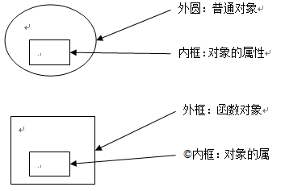
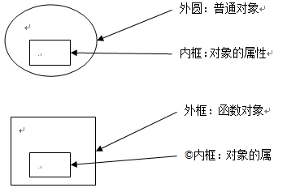

Function、Object
Js自带的函数对象。
prototype
每一个函数对象都有一个显示的prototype属性,它代表了对象的原型(Function.prototype函数对象是个例外，没有prototype属性)。__proto__是内部原型，prototype是构造器原型（构造器其实就是函数）
所有构造器/函数的__proto__都指向Function.prototype，它是一个空函数
__proto__
每个对象都有一个名为__proto__的内部隐藏属性，指向于它所对应的原型对象(chrome、firefox中名称为__proto__，并且可以被访问到)。原型链正是基于__proto__才得以形成(note：不是基于函数对象的属性prototype，prototype是函数的内置属性，__proto__是对象的内置属性)。
理解__proto__与prototype的关系
new 过程
var Person = function () { };
var p = new Person();
很简单的一段代码，我们可以把new的过程拆分成以下三步：
<1> var p={}; 也就是说，初始化一个对象p。
<2> p.__proto__=Person.prototype;
<3> Person.call(p);也就是说构造p，也可以称之为初始化p。
那么__proto__是什么？每个对象都会在其内部初始化一个属性，就是__proto__，当我们访问一个对象的属性 时，如果这个对象内部不存在这个属性，那么他就会去__proto__里找这个属性，这个__proto__又会有自己的__proto__，于是就这样 一直找下去，也就是我们平时所说的原型链的概念。
__proto__与prototype
var Person = function () { };
Person.prototype.Say = function () {
alert("Person say");
}
var p = new Person();
p.Say();
首先var p=new Person()；可以得出p.__proto__=Person.prototype。
那么当我们调用p.Say()时，首先p中没有Say这个属性， 于是，他就需要到他的__proto__中去找，也就是Person.prototype，而我们在上面定义了 Person.prototype.Say=function(){}; 于是，就找到了这个方法
__proto__与prototype复杂例子
var Person = function () { };
Person.prototype.Say = function () {
alert("Person say");
}
Person.prototype.Salary = 50000;
var Programmer = function () { };
Programmer.prototype = new Person();
Programmer.prototype.WriteCode = function () {
alert("programmer writes code");
};
Programmer.prototype.Salary = 500;
var p = new Programmer();
p.Say();
p.WriteCode();
alert(p.Salary);
var p=new Programmer()可以得出p.__proto__=Programmer.prototype;
而在上面我们指定了Programmer.prototype=new Person();我们来这样拆分，var p1=new Person();Programmer.prototype=p1;那么:
p1.__proto__=Person.prototype;
Programmer.prototype.__proto__=Person.prototype;
由根据上面得到p.__proto__=Programmer.prototype。可以得到p.__proto__.__proto__=Person.prototype。
清楚了之后我们来看上面的结果,p.Say()。由于p没有Say这个属性，于是去p.__proto__，也就是 Programmer.prototype，也就是p1中去找，由于p1中也没有Say，那就去p.__proto__.__proto__，也就是 Person.prototype中去找，于是就找到了alert(“Person say”)的方法。
其实prototype只是一个假象，他在实现原型链中只是起到了一个辅助作用，换句话说，他只是在new的时候有着一定的价值，而原型链的本质，其实在于__proto__！
关于上面提到的函数对象，我们来看以下例子，来说明：
var o1 = {};
var o2 =new Object();
function f1(){}
var f2 = function(){}
var f3 = new Function('str','console.log(str)');
f3('aabb'); // aabb
console.log('typeof Object:'+typeof Object); //function
console.log('typeof Function:'+typeof Function); //function
console.log('typeof o1:'+typeof o1); //object
console.log('typeof o2:'+typeof o2); //object
console.log('typeof f1:'+typeof f1); //function
console.log('typeof f2:'+typeof f2); //function
console.log('typeof f3:'+typeof f3); //function
通常我们认为o1、o2是对象，即普通对象；f1、f2、f3为函数。
但是其实函数也是对象，是由Function构造的，
f3这种写法就跟对象的创建的写法一样。f1、f2最终也都像f3一样是有Function这个函数构造出来的
f1、f2、f3为函数对象，Function跟Object本身也是函数对象。
Js中每个对象(null除外)都和另一个对象相关联，通过以下例子跟内存效果图来分析Function、Object、Prototype、__proto__对象间的关系。
/********************* 系统定义的对象Array、Date ****************************/
console.log('**************test Array、Date****************');
var array = new Array();
var date = new Date();
console.log('array.__proto__===Array.prototype:'+(array.__proto__===Array.prototype)); //true
console.log('Array.__proto__===Function.prototype:'+(Array.__proto__===Function.prototype)); //true
console.log('date.__proto__===Date.prototype:'+(date.__proto__===Date.prototype)); //true
console.log('Date.__proto__===Function.prototype:'+(Date.__proto__===Function.prototype)); //true
说明了Array等都是构造器，这些构造器其实是Function的一个对象。 也就是说相当于 var Array = new Function();
JavaScript中有内置(build-in)构造器/对象共计12个（ES5中新加了JSON），可访问的9个构造器是：Number，Boolean，String，Object，Function，Array，RegExp，Error，Date。剩下如Global不能直接访问，Arguments仅在函数调用时由JS引擎创建，Math，JSON是以对象形式存在的，无需new。它们的__proto__是Object.prototype。
/********************* 自定义的对象 ****************************/
console.log('***********自定义的 proto*****************');
function Animal(){
}
var anim = new Animal();
console.log('typeof Animal.prototype:' +typeof Animal.prototype); //object
console.log('anim.__proto__===Animal.prototype:'+(anim.__proto__===Animal.prototype)); //true
console.log('Animal.__proto__===Function.prototype:'+(Animal.__proto__===Function.prototype)); //true
console.log('Animal.prototype.__proto__===Object.prototype:'+(Animal.prototype.__proto__===Object.prototype)); //true
所有的构造器都来自于Function.prototype，甚至包括根构造器Object及Function自身。所有构造器都继承了Function.prototype的属性及方法。如length、call、apply、bind（ES5）。
Function.prototype也是唯一一个typeof XXX.prototype为 “function”的prototype。其它的构造器的prototype都是一个对象。
console.log('***********Function proto*****************');
console.log('typeof Function.prototype:'+typeof Function.prototype); //function
console.log('typeof Function.__proto__:'+typeof Function.__proto__); //function
console.log('typeof Function.prototype.prototype:'+typeof Function.prototype.prototype); //undefined
console.log('typeof Function.prototype.__proto__:'+typeof Function.prototype.__proto__); //object
console.log('Function.prototype===Function.__proto__:'+(Function.prototype===Function.__proto__)); //true
console.log('***********Object proto*****************');
console.log('typeof Object.prototype:'+typeof Object.prototype); //object
console.log('typeof Object.__proto__:'+typeof Object.__proto__); //function
console.log('Object.prototype.prototype:'+Object.prototype.prototype); //undefied
console.log('Object.prototype.__proto__===null:'+(Object.prototype.__proto__===null)); //null
console.log('***********Function Object proto关系*****************');
console.log('Function.prototype===Object.__proto__:'+(Function.prototype===Object.__proto__)); //true
console.log('Function.__proto__===Object.__proto__:'+(Function.__proto__===Object.__proto__)); //true
console.log('Function.prototype.__proto__===Object.prototype:'+(Function.prototype.__proto__===Object.prototype)); //true
Function、Object、Prototype、__proto__内存关系图
 
Function.prototype函数对象图内部表示prototype属性的红色虚框，只是为了说明这个属性不存在。
参照文章Javascript_01_理解内存分配。

Function.prototype函数对象图内部表示prototype属性的红色虚框，只是为了说明这个属性不存在。
参照文章Javascript_01_理解内存分配。
通过上图Function、Object、Prototype关系图中，可以得出一下几点：
所有对象所有对象，包括函数对象的原型链最终都指向了Object.prototype，而Object.prototype.__proto__===null，原型链至此结束。
Animal.prototype是一个普通对象。
Object是一个函数对象，也是Function构造的，Object.prototype是一个普通对象。
Object.prototype.__type__指向null。
Function.prototype是一个函数对象，前面说函数对象都有一个显示的prototype属性，但是Function.prototype却没有prototype属性，即Function.prototype.prototype===undefined，所有Function.prototype函数对象是一个特例，没有prototype属性。
Object虽是Function构造的一个函数对象，但是Object.prototype没有指向Function.prototype，即Object.prototype!==Function.prototype。
参考：
http://www.cnblogs.com/fool/category/264215.html (javascript原理介绍)
http://www.libuchao.com/2012/05/14/prototypes-in-javascript/ (JavaScript 的原型对象 Prototype)
http://rockyuse.iteye.com/blog/1426510 (理解js中的原型链，prototype与__proto__的关系)
https://developer.mozilla.org/zh-CN/docs/Web/JavaScript/Inheritance_and_the_prototype_chain